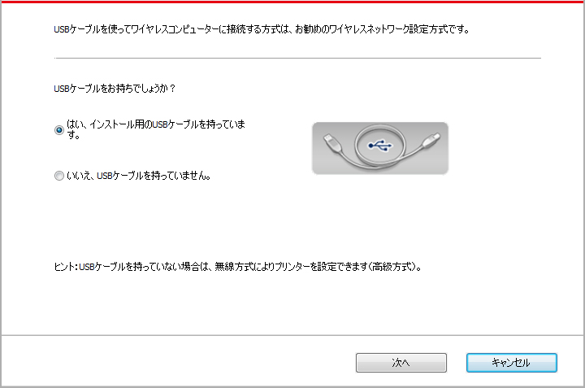
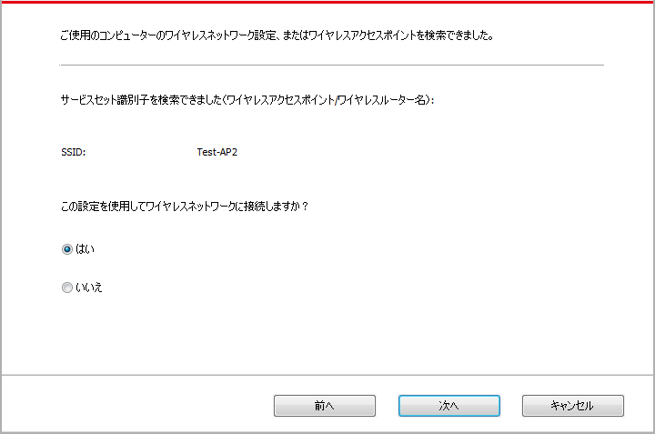
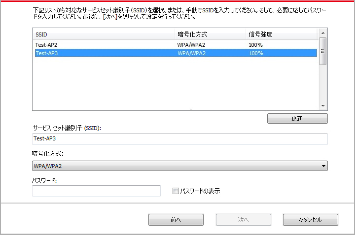
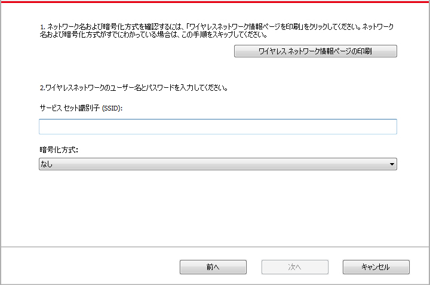
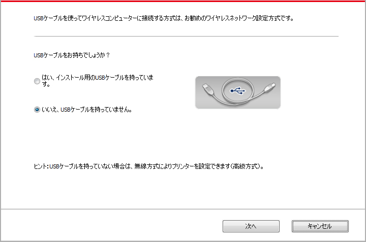
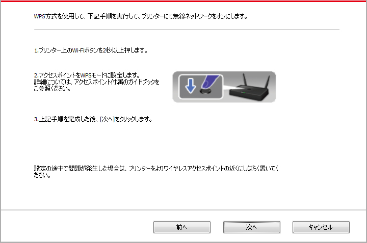
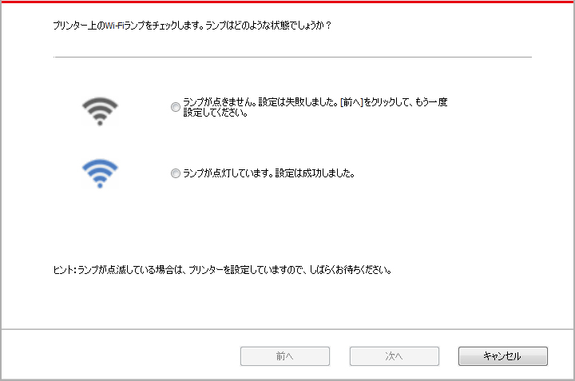

5.ワイヤレスネットワーク設定（Wi-Fiモデルに適用します）
WI-FI対応のプリンターはインフラストラクチャーモードとSoft-APモードに対応していますが、コンピューターとプリンター間の接続は通常どちらかのモードでの接続となります。ワイヤレスネットワークの設定中に問題が発生した場合は、「セクション 5.3 ワイヤレスネットワーク設定でよくある問題」を参照して下さい。
 |
インフラストラクチャーモード：ワイヤレスルーターを介してワイヤレスデバイスに接続します 1.アクセスポイント（ワイヤレスルーター）。 2.ワイヤレスネットワークプリンター。 3.ワイヤレスネットワークを介してアクセスポイントに接続しているコンピューター。 4.ネットワークケーブルを介してアクセスポイントに接続しているコンピューター。 |
|
|
Soft-AP ワイヤレス コンピューターをワイヤレス デバイスに直接接続します。 |

5.1.インフラストラクチャモード
アクセスポイント（ワイヤレスルーター）を介して、コンピューターとプリンターを接続することができます。アクセスポイント（ワイヤレスルーター）の接続方式はワイヤレスネットワーク設定ツールとWi-Fi Protected Setup（WPS）設定の2種類に分けます。
重要：ワイヤレスネットワークの設定を行う前に、ご使用のアクセスポイント（ワイヤレスルーター）のSSIDとパスワードを知らなければなりません。これはワイヤレスネットワークを設定する時に必要です。分からない場合は、ネットワークの係員またはアクセスポイント（ワイヤレスルーター）のメーカーにお問い合わせください。
5.1.1.ワイヤレスネットワーク設定ツール
ご使用のコンピューターはすでにドライバーソフトウェアをインストールし、ワイヤレスネットワークに接続したことがあるが、ワイヤレスネットワークが変わった場合は、ワイヤレスネットワーク設定ツールによって設定し直すことができます。
5.1.1.1.事前準備
1. アクセスポイント（ワイヤレスルーター）。
2. ネットワークに接続されているコンピューター。
3. ワイヤレスネットワーク機能を有するプリンター。
5.1.1.2.ワイヤレスネットワーク設定ツールの設定方法
1. コンピューターでのワイヤレスネットワーク設定ツールを起動します。
1) Windowsシステム：コンピューターの「スタート」メニュー－「すべてのアプリ」－「Pantum」－「製品名」－「ワイヤレスネットワーク設定ツール」をクリックします。
2) Macシステム：コンピューターのFinderメニュー欄の「移動」－「アプリケーション」－「Pantum」－「Utilities」－「Wireless Network Configuration Tool」をクリックします。
2. USBケーブルを使用して、接続し設定します。
下記画面で、「はい、インストール用のUSBケーブルを持っています」を選択して、「次へ」をクリックします。

2.1.コンピューターはすでにワイヤレスネットワークに接続されました。
1) ワイヤレスネットワーク設定ツールはデフォルトでこのコンピューターが接続しているワイヤレスネットワークを選択します。画面のヒントに従って設定を完成してください。

 |
注： |
• 選択頂くSSIDはコンピューターを接続しているアクセスポイント（ワイヤレスルーター） と同じSSIDです。 |
2) 他のワイヤレスネットワークに接続したい場合は、「キャンセル」を選択して、他のワイヤレスネットワークを設定してください。画面のヒントに従って設定を完成してください。

|
注： |
• 現在、プリンターがサポートしているセーフモードは三種類あります：None、WEPとWPA/WPA2です。 1) None：暗号化方式を一切使用していません。 2) WEP：WEP（Wired Equivalent Privacy）の使用によって、安全秘密鍵方式でデータの発信と受信を行います。WEP秘密鍵は64と128位の暗号化ネットワークに適用し、数字とアルファベットを同時に含むことができます。 3) WPA/WPA2：Wi-Fi Protected Access Pre-shared Keyであり、TKIPまたはAES暗号化（WPS－Personal）の使用によって、ワイヤレスデバイスをアクセスポイントに接続させます。WPA/WPA2はキャラクター数が8～63範囲内のPre-shared Key（PSK）を使用しています。 • デフォルトでは「パスワードの表示」オプションにチェックが入っていません。チェックが入っている場合は、入力したパスワードが表示されます。 |
2.2.コンピューターはワイヤレスネットワークに接続されていません。
下記画面で、アクセスポイント（ワイヤレスルーター）のSSID（SSIDは大小文字を区別する）とパスワードを入力して、画面のヒントに従って設定を完成します。

|
注： |
• アクセスポイント（ワイヤレスルーター）のSSIDが分からない場合は、[ワイヤレスネットワーク情報ページの印刷]をクリックして、アクセスポイント（ワイヤレスルーター）のSSIDをご確認ください。 • ワイヤレスネットワーク設定が完成した後、プリンターが正常に動作しない場合は、ドライバーソフトウェアをインストールし直して下さい。 |
3. WPS接続を使用します。
下記画面で、「いいえ、インストール用のUSBケーブルを持っていません」を選択して、「次へ」をクリックします。

1) WPS方式を使用して、下記手順を実行して、プリンターにて無線ネットワークをオンにします。（WPS設定の詳細については、セクション 5.1.2をご参照ください）

2) プリンター上のWi-Fiランプの状態により、プリンターの接続が成功であるかどうかを判断できます。設定が失敗した場合は、「前へ」をクリックして、もう一度設定してください。設定が成功した場合は、「終了」ボタンをクリックして、設定を完成してください。

|
注： |
• ワイヤレスネットワーク設定が完成した後、プリンターが正常に動作しない場合は、ドライバーソフトウェアをインストールし直して下さい。 |
5.1.2.Wi-Fi Protected Setup（WPS）設定
アクセスポイント（ワイヤレスルーター）がWi-Fi Protected Setup（WPS）をサポートしている場合は、プリンターコントロールパネル上の「Wi-Fi」ボタンとアクセスポイント（ワイヤレスルーター）上のWPSボタンをそれぞれ押して、プリンターをワイヤレスネットワークに接続することができます。
5.1.2.1.事前準備
1. アクセスポイント（ワイヤレスルーター）がWi-Fi Protected Setup（WPS）をサポートしている。
2. ワイヤレスネットワーク機能を有するプリンター。
5.1.2.2.Wi-Fi Protected Setup（WPS）設定方法
1. プリンターとアクセスポイント（ワイヤレスルーター）の電源スイッチをオンにします。
2. プリンターが準備完了モードであることを確保します。
|
注： |
• プリンターがスリープモードである場合は、コントロールパネル上の任意なボタンを押せば、プリンターは復帰します。 |
3. プリンターコントロールパネル上の「Wi-Fiボタン」を、プリンターのWi-Fiランプが青く点滅しているまで、2秒以上押します。
4. ２分以内にアクセスポイント（ワイヤレスルーター）上の「WPSボタン」を押す必要があります。
5. アクセスポイント（ワイヤレスルーター）とプリンターがワイヤレスネットワーク接続をしている時、プリンターのWi-Fiランプが青く点滅します。接続が成功した後、プリンターのWi-Fiランプが青く点灯します。
2分以内に接続を確立できない場合は、プリンターは準備完了モードに戻り、Wi-Fiランプがオフし、Wi-Fi Protected Setup（WPS）接続が失敗します。接続し直す必要がある場合は、前記手順3-4を繰り返してください。
|
注： |
• Wi-Fi Protected Setup（WPS）接続が成功した後、ワイヤレスネットワーク方式でプリントしたい場合は、ドライバーソフトウェアをインストールしてください。 |
5.1.3.接続しているWi-Fiネットワークの閉じる方法
上記手順に従って、インフラストラクチャモードのワイヤレスネットワーク接続を完成します。接続している状態で、コントロールパネル上のWi-Fiランプ が点灯します。この時、このボタンを2秒以上押すと、Wi-Fi接続を切断できます（Wi-Fiランプがオフになります）。
5.2.Wi-Fiホットスポットモード
アクセスポイント（無線ルーター）を使用せずに、無線対応のコンピューターと無線対応のプリンターを接続することができます。
5.2.1.事前準備
1. WI-FIホットスポット対応プリンター。
2. 無線対応コンピューター。
5.2.2.Wi-Fiホットスポット接続
プリンターのWi-Fi に接続する前に、プリンターのWi-Fiホットスポットモードを起動してください。起動するには、内蔵の Web サーバーにログインし、「設定」-「無線LANの設定」-「無線LANスポット」の順にクリックし、ホットスポットを「有効」状態にします。
5.2.3.Wi-Fi ホットスポット設定
プリンターのワイヤレス ホットスポットがアクティブな場合は、検索して直接接続することができます。ワイヤレス ホットスポットはデフォルトで有効になっており、デフォルトのパスワードは"12345678" です。プリンター固有の SSIDとパスワードは、“WiFi設定印刷“ を選択すると印刷される “WiFi設定情報ページ“ に記載されています。 接続後は、Web設定方法に従って設定を完了できます。
5.3.ワイヤレスネットワーク設定でよくある問題
1.プリンターが見つからない
• コンピューター、アクセスポイント（ワイヤレスルーター）またはプリンターの電源スイッチをオンにしたかどうか。
• コンピューターとプリンターはUSBケーブルによって接続されているかどうか。
• プリンターはワイヤレスネットワーク接続をサポートしているかどうか。
2.ネットワークに接続されている時、SSIDが見つからない
• アクセスポイント（ワイヤレスルーター）の電源スイッチをオンにしたかどうかを確認してください。
• ご希望のアクセスポイント（ワイヤレスルーター）のSSIDを検索できませんでした。アクセスポイントのSSIDを確認して、もう一度接続を試みてください。
• アクセスポイント（ワイヤレスルーター）の設定が変わった度に、必ずプリンターのワイヤレスネットワークを再設定してください。
3.接続に失敗しました
• アクセスポイント（ワイヤレスルーター）とプリンターのセーフモードやパスワードが正確であるかどうかを確認してください。
• プリンター周囲のワイヤレス受信をチェックしてください。ワイヤレスルーターがプリンターを遠く離れている、またはその間に障害物がある場合は、信号の受信に影響する可能性があります。
• アクセスポイント（ワイヤレスルーター）とプリンターの電源を一度オフにし再起動した後、もう一度設定を行います。
4.ネットワークの中でプリンターを使用している時に問題が発生した場合は、下記の検査を行ってください:
• ファイアウォールソフトによる封鎖で通信が遮断されているかどうかを確認します。コンピューターとプリンターが同じネットワークに接続されているのに検索できないのは、ファイアウォールソフトによる封鎖で通信が遮断されている可能性があります。ファイアウォールソフトのユーザーガイドを参照して、ファイアウォールを閉じ、改めてプリンターを検索してください。
• プリンターのIPアドレスの割り当てが正確であるかどうかを確認します。プリンターのネット設定情報ページを印刷して、IPアドレスを確認することができます。
• プリンターおよびコンピュータが同一のネットワークに存在している際は次のステップを参考に確認してください。
1) 以下にある、「適切にコマンドする」を選択してください。
a. Windows 8/10システム；スタートメニュー中の「検索」ボタンを選択して、「適切にコマンドする」と検索バーに入力し、その後キーボードの「Enter」を押してください。
b. Windows 7/Vista/Server 2008システム：「スタート」メニュー-「全プロセス」-「添付」-「適切にコマンドする」とクリックしてください。
2) ping及びプリンターIPアドレスを立ち上がったウインドウに入力し、「Enter」ボタンを押してください。
例えば、ping XXX.XXX.XXX.XXX （「 XXX.XXX.XXX.XXX」はプリンターIPアドレスです）
3) RTTがウインドウに表示されている場合は、プリンターとコンピュータが同一のネットワークに存在していることを意味します。RTTがウインドウに表示されていない場合は、第5章 を参考にしてプリンターワイヤレスネットワーク環境を再設定してください。
|
注： |
• アクセスポイント（ワイヤレスルーター）の関連情報は、当該ユーザーガイドを参照、またはアクセスポイント（ワイヤレスルーター）のメーカーにお問い合わせください。 |